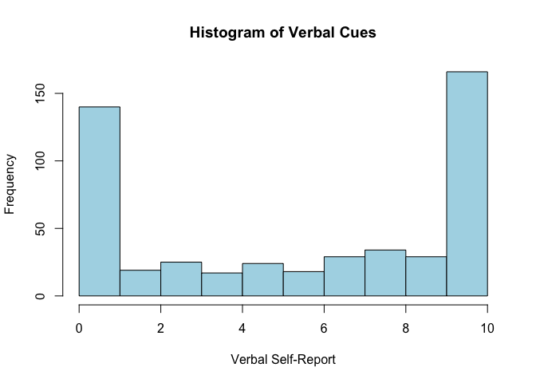

![]()

Identifying situational and dispositional predictors of college students’ active consent communication
A micro-longitudinal investigation of verbal and nonverbal sexual consent cues
Keywords
Sexual consent, Sexual assault, Machine learning, College student, Alcohol
SPECIFIC AIMS
Sexual consent is a multidimensional process made up of thoughts, feelings, and behaviors; the presence of sexual consent distinguishes wanted sexual encounters from sexual assault (Muehlenhard et al. 2016). People can communicate willingness to engage in sexual activity through the exchange of active consent cues, which may be verbal or nonverbal and direct or indirect, ranging from a clear and spoken “yes” to subtle body language (Willis, Blunt-Vinti, and Jozkowski 2019). Research shows that dispositional factors, including personal characteristics, histories, attitudes, and traits, are linked to differences in how people communicate consent. Gender, for instance, has emerged as a salient factor, with several studies concluding that women are less likely than men to use direct, verbal cues (Jozkowski et al. 2014; Willis and Smith 2022).
Extant research has addressed who seems more likely to use certain types of active consent communication, but less is known about the encounter-specific factors that influence when individuals use these cues or why they use them in some situations and not others. This is a problem because the situational context of a sexual encounter may be more important than individual differences in how people tend to communicate consent in general. Recent research indicates that within-person variability can account for between 50% and 80% of the variance in active consent communication, suggesting that people are more dynamic than static in their active consent cue usage across sexual encounters (Willis et al. 2021). Situational factors such as co-occurring alcohol consumption also have been shown to moderate associations between dispositional factors and active consent behavior (e.g., heterosexual women appear to use more verbal cues when a sexual encounter follows alcohol use) (Marcantonio et al. 2024).
Compared to attitudes or stable traits, factors that vary from one encounter to the next may serve as more readily modifiable targets for consent-focused sexual assault prevention efforts focused on changing behavior (Porat et al. 2024). However, progress toward understanding the conditions under which people use more active verbal and nonverbal cues has been limited. Possible reasons for this include widespread reliance on retrospective reports prone to recall bias, as well as analytic strategies that lead to overfitting, inflated effect sizes, and poor reproducibility. To advance the field, the proposed research will leverage micro-longitudinal data and analytic approaches that can reduce dimensionality without becoming too overfit to generalize to new samples.
To identify robust predictors of active sexual consent communication and evaluate how they interact across levels, I will analyze >500 partnered sexual events reported by ~270 college students over a 28-day daily diary period. Outcomes are verbal and nonverbal cue usage, modeled separately as distinct forms of active consent communication. Predictors fall into two blocks: dispositional (baseline) and situational (encounter-level) factors. Analyses will use elastic net regression (primary) and random forest (secondary robustness check), evaluated with nested, participant-grouped cross-validation. A participant-level bootstrap (or Bayesian bootstrap) will estimate uncertainty in ΔMAE when comparing blocks (dispositional vs. situational) and when adding a small, theory-driven interaction block. The overarching goal of this project is to inform actionable intervention targets by examining active consent communication using mirco-longitudinal data and both regularized and nonparametric machine learning techniques. Thus, I propose the following aims.
Aim 1: Identify and compare the predictive contributions of dispositional and situational features for active verbal and nonverbal consent cues, and determine which features within each block contribute most strongly.
Hypotheses: (H1a) Situational features will improve out-of-participant generalization beyond dispositional features (ΔMAE < 0). (H1b) Situational-only will outperform dispositional-only models. (H1c) Combined models will outperform single-block models.
Aim 2: Evaluate whether a pre-specified, cross-level interaction block improves generalization and examine which interactions, if any, yield reliable improvements under cross-validation. A small, theory-driven set of interaction terms will be tested as a block. Interactions will be retained only if the block improves model performance under cross-validation.
Hypotheses: (H3a-e) – –
(H3f) Interaction gains will differ by outcome for verbal versus nonverbal consent communication.
BACKGROUND AND SIGNIFICANCE
Rates of sexual assault on U.S. college campuses remain virtually unchanged after more than 30 years of dedicated research and intervention (Koss, Gidycz, and Wisniewski 1987; Koss et al. 2022). Lack of consent is increasingly recognized as defining characteristic of sexual assault, so institutions have incorporated consent-focused education into sexual assault prevention efforts (M. A. Beres 2007; M. Beres 2020). A substantial gap exists between the standards for consent that these programs espouse and the consent practices that people describe themselves using during real-world sexual encounters (Curtis and Burnett 2017). University policy and consent education promote explicit and enthusiastic consent (e.g., “only yes means yes!”), but many people rely on passive cues (not resisting, not saying no) or assumptions to determine consent. people prefer nonverbal communication and many rely on passive cues (not resisting, not saying no) or assumptions based on context to determine consent (Marcantonio, Willis, and Jozkowski 2022; Jozkowski, Manning, and Hunt 2018; Jozkowski and Willis 2020). Clarifying what factors predict which students are more likely to use active consent cues and when they are more likely to use them will be crucial for informing intervention messaging grounded in students’ lived experiences.
Alcohol is a salient factor in the context of both sexual assault and consensual sexual activity among college students, yet sexual assault prevention and risk-reduction programs rarely include information about how alcohol can affect consent communication (Leone et al. 2022). While scholars and practitioners have started integrating alcohol and sexual assault programming, there is far more research on alcohol-related sexual assault compared to consent involving alcohol use (Kilpatrick and Hahn 2023). Sexual assault and consent research often examine the same processes from different angles (e.g., how consent is established versus how it breaks down), and experts from both domains have called for a renewed focus on situational factors explored through a behavioral science lens (Gantman and Paluck 2022; Burton et al. 2023; Davis et al. 2023). These converging frameworks and recommendations present a unique opportunity; to leverage knowledge from the relatively vast sexual assault literature to learn more about active consent communication in the context of alcohol consumption.
Researchers have examined situational factors in relation to consent by conducting systematic, within-person comparisons of two matched events, or by grounding responses to cross-sectional surveys in each participant’s most recent sexual encounter. While informative, these studies ask people to remember past events and thus risk recall bias. In contrast, intensive longitudinal designs gather repeated observations over days or weeks, capturing behaviors and surrounding factors closer in time to when they occur. Experiential sampling via electronic daily reports or “diaries” can achieve this, allowing for more precise measurement of malleable situational factors while improving ecological validity.
A key point of alignment across the sexual assault and consent literatures centers on their use of social ecological models, which posit that factors at the individual, interpersonal, community and societal levels interactively influence the incidence of focal outcomes. Using an ecological framework means that researchers can incorporate risk and protective factors derived from different disciplines into the same conceptual model, allowing for consideration of their complex interplay. However, building complex models with multiple predictors and relatively small sample sizes contributes to overfitting. This problem is exacerbated by reliance on analytic approaches that typically develop and validate models in the same sample, capitalizing on noise specific to the sample and inflating effect sizes in the process. Still, because sexual consent is a heterogeneous, multi- determined process, models fit with just a few predictors can only explain a small portion of the variance.
Tools from the field of machine learning may offer a solution. Regularization, for instance, can be used within resampling methods such as cross-validation to facilitate variable selection, reduce overfitting, and estimate how well models will generalize to new data. Using these complementary techniques can facilitate building more parsimonious and reproducible models, as evidenced by recent studies related to sexual violence (Walsh et al. 2024; Cruz-Mendoza et al. 2025).
The proposed research moves beyond the limitations of prior studies, allowing us to consider many interdisciplinary predictors of active consent behavior and to isolate those most critical across levels of analysis. This rigorous approach enhances the significance of our findings: any dispositional predictors identified as important will have survived penalization, and their relative contributions will be verified in a model that also includes situational predictors, increasing confidence that these are reliable targets for intervention or further theory development.
APPROACH
Brief overview
I will conduct the proposed research using data our lab collected from students at a large public university in the midwestern United States. Specifically, we used Sona Systems to recruit participants from an online subject pool of undergraduates taking introductory psychology courses. We invited eligible students to participate via email with messages sent between October and mid-December of 2022. Participants were made aware that the study had two parts: a 30-minute baseline survey, and up to 28 daily diary surveys.
Procedures
The research team used Qualtrics to construct a series of data collection instruments for web-administration, and SurveySignal to send daily text messages with links to each daily diary survey. After providing informed consent, participants gained access to the baseline assessment via Qualtrics. After completing the baseline, each participant received (1.0) class credit as compensation, which translates to an additional percentage point on their final grade in their introductory psychology course. Students were then given the option to participate in the daily diary portion of the study. Every day for 28 days, each participant who opted in received a text message between 11:00 AM and 2:00 PM with a link to that day’s survey. Each day, those who had not yet opened the survey link also received a reminder text message two hours after the initial text was sent. The daily survey asked participants about their behaviors and experiences since the prior survey. For each complete daily diary, participants received 0.25 class credits as compensation. To incentivize responding, participants who completed all 28 daily diary surveys received a $20 Amazon.com gift card in addition to the 7.0 extra credit percentage points (28 x 0.25 class credits).
Participants
Eligible participants were those 18 years or older who owned a smartphone and reported consuming at least one alcoholic beverage in the past year. A total of 386 students met eligibility criteria and completed at least 20% of the baseline assessment. Of these, 279 students (87% heterosexual; 65% single) participated in the daily diary portion of the study. Of note, participant ages ranged from 18 - 23, with 95% of study participants under the age of 21.
Measures
The baseline and daily diary surveys were designed to capture theoretically and empirically supported dispositional and situational factors, respectively. Daily diaries asked about experiences and behaviors since the last (i.e., previous day’s) survey, so situational factors (e.g., alcohol use prior to the encounter) are anchored to the context of the same sexual encounter. The measures we selected were drawn from peer-reviewed research examining sexual consent and sexual assault, particularly among young people in adolescence through early adulthood.
Predictors
Add broad categories and numbers of raw variables in each.
Dispositional
Personal characteristics, histories, attitudes, and traits…
Situational
Relationship to partner, sexual precedence, type of sexual behavior, prior alcohol consumption, subjective intoxication, perceived partner intoxication, prior cannabis use, partner cannabis use, preceding affective states (positive and negative), prior stress level, prior sexual expectancies, condom use behavior, etc.
Outcomes
Two different types of active consent communication - verbal consent cues and nonverbal consent cues - which were only weakly correlated (r = .13). This empirical distinction justifies modeling them as separate outcomes. The three consent cue items were measured on a scale from 0-10…
Analytic Strategy
I will model two continuous outcomes reflecting active verbal and nonverbal sexual consent communication. Analyses will include all sexual encounters except those when the participant attempted to elicit some form of sexual contact but the sexual activity did not happen. The objective is to (1) identify features reliably associated with each outcome and (2) quantify the incremental predictive value of dispositional (baseline) vs. situational (daily diary) feature blocks for out-of-sample generalization to new participants. I will characterize associations for concurrent, within-window data, and will not make any claims about prospective or causal prediction.
Data pre-processing
I will follow recommended practices for data pre-processing and feature engineering in machine learning. All pre-processing will occur within resampling folds to prevent leakage. For each modeling pipeline, I will use within-fold imputation via bagged trees to handle predictors with missing data, then center and scale numeric predictors (unit variances) and dummy code categorical predictors. I will review descriptive statistics for coding errors and screen predictors for near-zero variance and perfect collinearity inside the resampling loop.
Model development and internal evaluation
I will develop elastic net linear regression and random forest models for each outcome using the tidymodels ecosystem. I chose to use these tools from the field of machine learning rather than ordinary least squares (OLS) because standard linear regression often yields high variance models when it is used with correlated predictors, and models with high variance do not generalize well to new data–an issue that may help to explain the number of contradictory findings in the sexual consent literature.
Elastic net regression is an interpretable parametric model; it uses regularization techniques that penalize the parametric model coefficients (parameter estimates) to yield simpler models often less prone to overfitting than OLS linear regression. Instead of using, for example, ridge or LASSO (‘Least absolute shrinkage and selection operator’), I chose elastic net regression from the broader class of linear models because it reaps the benefits of both approaches by blending the penalties that ridge (L2) and LASSO (L1) apply to parameter estimates. However, elastic net regressions may yield biased models that perform poorly if the true data generating process is non-linear, so I elected to include random forest as a robustness check to capture nonlinearity. Random forest is well-suited to this task because it is a flexible, non-parametric model equipped to handle high-dimensional data.
I will use participant-grouped, nested cross-validation to estimate out of sample performance for dispositional, situational, and combined elastic net models and tune hyperparameters without optimism. Specifically, I will use two repeats of 5-fold cross-validation for the inner loops and four repeats of 5-fold cross-validation for the outer loop, stratified by participant-count bins (1, 2-3, 4+) to balance fold difficulty. I will tune two hyperparameters for elastic net: lambda (λ; the penalty parameter) and alpha (the mixing parameter that dictates the proportion of the L1 vs. L2 penalties). I will also tune two hyperparameters for random forest: `mtry` and minimum node size (`min_n`). I will use 1000 trees for all random forest model configurations. Sensible values for each of the hyperparameters for elastic net and random forest will be derived from relevant tidymodels functions from the tune package.
Situational vs. dispositional value comparison with block ablation. I will implement block ablation using three pipelines fit and evaluated on identical resampling splits: (1) D only for dispositional features, (2) S only for situational features, and (3) D+S for combining both features sets. I will use cross-validated MAE as the primary metric for model selection, block comparisons, and decision rules. Thus, I define incremental value as ΔMAE when comparing D+S vs. D and D+S vs. S. This should yield block-level evidence for whether situational features add value beyond dispositional features, and vice versa.
Combined models will be extended with a small, theory-driven set of interaction terms; I will apply strong heredity, retaining main effects of predictors with interactive effects regardless of earlier shrinkage. I will evaluate the interaction block as a set via Bayesian resampling (comparing main-effects vs. interaction- augmented models) and interpret retained interactions. Random forest will serve as a sensitivity lens to detect nonlinearities, reported only if corroborated by elastic net interaction models.
Uncertainty estimation with participant-level Bayesian bootstrap. To obtain uncertainty for Δ-metrics that respect within-participant clustering, I will apply a participant-level Bayesian bootstrap: within each outer test fold, I will assign Dirichlet(1,…,1) weights to participants, recompute weighted metrics for D, S, and D+S, and take differences. Repeating this process will produce a posterior sample of Δ; I will summarize with the mean and 95% highest-density interval. Aggregation across outer folds should yield a principled internal-validation distribution of block effects. In addition to ΔMAE, the primary performance metric, Root Mean Squared Error (ΔRMSE), and cross-validated ΔR² will be computed on left-out participants in each outer fold and used as secondary metrics for contextualizing model performance.
Model interpretation and feature importance. Because inference is prediction-oriented and not causal, I will prioritize stability and consistency. For elastic net models, I will report non-zero coefficients and their selection frequency across folds and resamples. I also will summarize median coefficient magnitude and interquartile range for top features. For random forest, I will report conditional permutation importance with rank stability across resamples.
Limitations, Potential Problems, and Alternative Strategies
This work provides internal validation for generalization to new participants from the same sampling frame. External validation on an independent sample is beyond scope of this dissertation project and planned as a direction for future research. Importantly, all results are interpreted as associational and predictive in the concurrent window, with the exception of dispositional-only models.
- Measures not included in the data collection efforts supporting this project and that we intend to assess in future studies include:
- Passive “no response” cues
- Refusal cues used to indicate lack of willingness
- Specific behaviors classified fall within each cue type
- Perceptions of partner cue usage and cue effectiveness
- Elements of the design that I would change in retrospect:
- Instead of 1 beep 7 days per week, send 2 beeps Thursday-Sunday
- Concerns about specifics of this sample type (and how they may limit the proposed research):
- Most participants were first- or second-year students, nearly all underage (<21yo)
- Homogeneous in terms of sexual orientation and race
- How might this plan not work? What will I do to address these challenges if they do emerge?
Content from the study_template serving as placeholders for figures and equations:
Figures will be created in separate notebooks and embedded in the proposal.
I will use quarto inline to display math equations. Quarto provides details on the use of these equations.
For example \(x\) and \(y\) are two variables. And here is an important formula:
\[ p(x) = \frac{e^{-\lambda} \lambda^{x}}{x !} \]
To add results that are not figures or tables, I will open the objects I saved from these analyses. See lm.qmd as an example. Generally, I will open csv files that contain tidied results. For example:
A significant effect was observed (\(\beta\) = 3.9, t = 9.46, p = 0.000).
References
Beres, Melanie. 2020. “Perspectives of Rape-Prevention Educators on the Role of Consent in Sexual Violence Prevention.” Sex Education 20 (2): 227–38. https://doi.org/10.1080/14681811.2019.1621744.
Beres, Melanie A. 2007. “‘Spontaneous’ Sexual Consent: An Analysis of Sexual Consent Literature.” Feminism & Psychology 17 (1): 93–108. https://doi.org/10.1177/0959353507072914.
Burton, Olivia, Patrick Rawstorne, Lucy Watchirs-Smith, Sally Nathan, and Allison Carter. 2023. “Teaching Sexual Consent to Young People in Education Settings: A Narrative Systematic Review.” Sex Education 23 (1): 18–34. https://doi.org/10.1080/14681811.2021.2018676.
Cruz-Mendoza, Mariana Carolyn, Roberto Angel Melendez-Armenta, Juana Canul-Reich, and Julio Muñoz-Benítez. 2025. “Machine Learning Applied to Improve Prevention of, Response to, and Understanding of Violence Against Women.” Informatics 12 (2): 40. https://doi.org/10.3390/informatics12020040.
Curtis, Jena Nicols, and Susan Burnett. 2017. “Affirmative Consent: What Do College Student Leaders Think about “Yes Means Yes” as the Standard for Sexual Behavior?” American Journal of Sexuality Education 12 (3): 201–14. https://doi.org/10.1080/15546128.2017.1328322.
Davis, Kelly Cue, Elizabeth C. Neilson, Mitchell Kirwan, William H. George, and Cynthia A. Stappenbeck. 2023. “Understanding Alcohol-Involved Sexual Aggression Through the Science of Behavior Change.” In Alcohol and Sexual Violence, edited by David DiLillo, Sarah J. Gervais, and Dennis E. McChargue, 75–103. Nebraska Symposium on Motivation. Cham: Springer International Publishing. https://doi.org/10.1007/978-3-031-24426-1_4.
Gantman, Ana P., and Elizabeth Levy Paluck. 2022. “A Behavioral-Science Framework for Understanding College Campus Sexual Assault.” Perspectives on Psychological Science 17 (4): 979–94. https://doi.org/10.1177/17456916211030264.
Jozkowski, Kristen N., Jimmie Manning, and Mary Hunt. 2018. “Sexual Consent In and Out of the Bedroom: Disjunctive Views of Heterosexual College Students.” Women’s Studies in Communication 41 (2): 117–39. https://doi.org/10.1080/07491409.2018.1470121.
Jozkowski, Kristen N., Zoë D. Peterson, Stephanie A. Sanders, Barbara Dennis, and Michael Reece. 2014. “Gender Differences in Heterosexual College Students’ Conceptualizations and Indicators of Sexual Consent: Implications for Contemporary Sexual Assault Prevention Education.” The Journal of Sex Research 51 (8): 904–16. https://doi.org/10.1080/00224499.2013.792326.
Jozkowski, Kristen N., and Malachi Willis. 2020. “People Perceive Transitioning from a Social to a Private Setting as an Indicator of Sexual Consent.” Psychology & Sexuality 11 (4): 359–72. https://doi.org/10.1080/19419899.2020.1769162.
Kilpatrick, Dean G., and Christine K. Hahn. 2023. “Understanding and Addressing Alcohol and Sexual Violence: We Have Made Progress but Still Have Miles to Go.” In Alcohol and Sexual Violence, edited by David DiLillo, Sarah J. Gervais, and Dennis E. McChargue, 173–213. Nebraska Symposium on Motivation. Cham: Springer International Publishing. https://doi.org/10.1007/978-3-031-24426-1_7.
Koss, Mary P., Christine A. Gidycz, and Nadine Wisniewski. 1987. “The Scope of Rape: Incidence and Prevalence of Sexual Aggression and Victimization in a National Sample of Higher Education Students.” Journal of Consulting and Clinical Psychology 55 (2): 162–70. https://doi.org/10.1037/0022-006X.55.2.162.
Koss, Mary P., Kevin M. Swartout, Elise C. Lopez, Raina V. Lamade, Elizabeth J. Anderson, Carolyn L. Brennan, and Robert A. Prentky. 2022. “The Scope of Rape Victimization and Perpetration Among National Samples of College Students Across 30 Years.” Journal of Interpersonal Violence 37 (1-2): NP25–47. https://doi.org/10.1177/08862605211050103.
Leone, Ruschelle M., Tiffany Marcantonio, Michelle Haikalis, and Anne Marie Schipani-McLaughlin. 2022. “Barriers to Addressing Alcohol Use in College Sexual Assault Prevention: Where We Stand and Future Steps.” Current Addiction Reports 9 (4): 420–31. https://doi.org/10.1007/s40429-022-00455-2.
Marcantonio, Tiffany L., Chunhua Cao, Ruschelle M. Leone, and Karen Cropsey. 2024. “A Within-Person Examination of Alcohol-Involved and Non–Alcohol-Involved Internal and External Sexual Consent Communication.” Journal of Studies on Alcohol and Drugs 85 (5): 627–35. https://doi.org/10.15288/jsad.23-00260.
Marcantonio, Tiffany L., Malachi Willis, and Kristen N. Jozkowski. 2022. “Effects of Typical and Binge Drinking on Sexual Consent Perceptions and Communication.” Journal of Sex & Marital Therapy 48 (3): 273–84. https://doi.org/10.1080/0092623X.2021.1986445.
Muehlenhard, Charlene L., Terry P. Humphreys, Kristen N. Jozkowski, and Zoe D. Peterson. 2016. “The Complexities of Sexual Consent Among College Students: A Conceptual and Empirical Review.” Journal of Sex Research 53 (4-5): 457–87. https://doi.org/10.1080/00224499.2016.1146651.
Porat, Roni, Ana Gantman, Seth A. Green, John-Henry Pezzuto, and Elizabeth Levy Paluck. 2024. “Preventing Sexual Violence: A Behavioral Problem Without a Behaviorally Informed Solution.” Psychological Science in the Public Interest 25 (1): 4–29. https://doi.org/10.1177/15291006231221978.
Walsh, Kate, Nicole Short, Yin Yao Ji, Xin Ming An, Kristen D. Witkemper, Megan Lechner, Kathy Bell, et al. 2024. “Development of a brief bedside tool to screen women sexual assault survivors for risk of persistent posttraumatic stress six months after sexual assault.” Journal of Psychiatric Research 174 (June): 54–61. https://doi.org/10.1016/j.jpsychires.2024.04.013.
Willis, Malachi, Heather D. Blunt-Vinti, and Kristen N. Jozkowski. 2019. “Associations Between Internal and External Sexual Consent in a Diverse National Sample of Women.” Personality and Individual Differences 149 (October): 37–45. https://doi.org/10.1016/j.paid.2019.05.029.
Willis, Malachi, Kristen N. Jozkowski, Ana J. Bridges, Jennifer C. Veilleux, and Robert E. Davis. 2021. “Assessing the Within-Person Variability of Internal and External Sexual Consent.” The Journal of Sex Research 58 (9): 1173–83. https://doi.org/10.1080/00224499.2021.1913567.
Willis, Malachi, and Rebecca Smith. 2022. “Sexual Consent Across Diverse Behaviors and Contexts: Gender Differences and Nonconsensual Sexual Experiences.” Journal of Interpersonal Violence 37 (19-20): NP18908–34. https://doi.org/10.1177/08862605211044101.